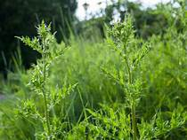

Nature, in the broadest sense, is the natural, physical, material world or universe. "Nature" can refer to the phenomena of the physical world, and also to life in general. The study of nature is a large, if not the only, part of science. Although humans are part of nature, human activity is often understood as a separate category from other natural phenomena.

The word nature is borrowed from the Old French nature and is derived from the Latin word natura, or "essential qualities, innate disposition", and in ancient times, literally meant "birth".[2] In ancient philosophy, natura is mostly used as the Latin translation of the Greek word physis (φύσις), which originally related to the intrinsic characteristics that plants, animals, and other features of the world develop of their own accord.

The concept of nature as a whole, the physical universe, is one of several expansions of the original notion;[1] it began with certain core applications of the word φύσις by pre-Socratic philosophers (though this word had a dynamic dimension then, especially for Heraclitus), and has steadily gained currency ever since. During the advent of modern scientific method in the last several centuries, nature became the passive reality, organized and moved by divine laws.